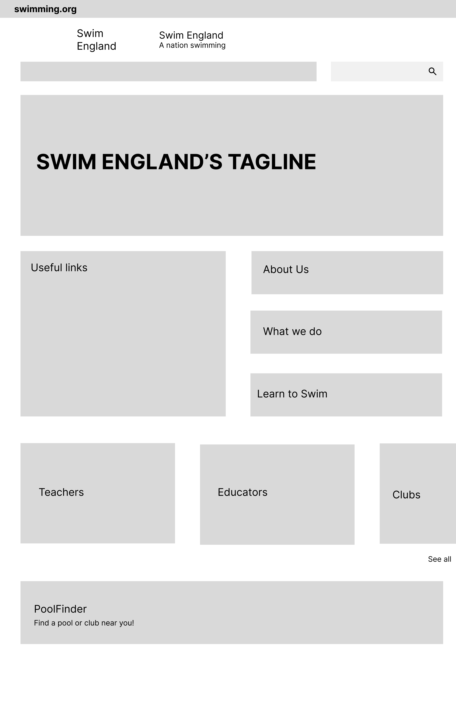

Usability Audit and UX Redesign for a National Sports Website
Understanding the Problem
National health and sports organizations often serve broad and diverse audiences, but their websites frequently fall short in usability. I conducted a UX audit and usability testing initiative to evaluate and improve a real-world example: a public-facing sports and fitness site supporting swimmers, parents, teachers, and volunteers.
Focus: Simplifying user journeys and homepage clarity
Goal: Ensure content is findable and aligned with real-world needs
What I’d do differently:
Involve real users from each key group (e.g., parents, teachers) rather than relying on roleplay alone.
Research
Moderated usability testing with 3 participants (in-person and remote)
Used roleplay to simulate different user goals (parent, coach, swimmer)
Applied think-aloud protocol and tracked non-verbal cues
Tasked users with finding key info like lessons, events, or pool locations
What I’d do differently:
Recruit more diverse participants and screen for background in fitness or education to reflect actual user base.
Navigation & Layout
Homepage was overwhelming and unclear — users struggled to grasp the site's purpose
Menu items were inconsistently grouped; key areas like events and volunteering were buried
Created a wireframe with simplified homepage layout, focused CTAs, and repositioned links for improved scanning
Followed principles from Nielsen’s web reading patterns (F-pattern) to reposition key content
What I’d do differently:
Involve a content strategist earlier to audit and rewrite dense or redundant page content.
Usability Issues Discovered Through Testing
Tested real tasks like “Find a pool near you” and “Understand swimming progression stages”
PoolFinder tool was barely visible — most users failed to find it without help
Learn to Swim pages were info-heavy and not structured for quick scanning or task success
Analyzed data via affinity mapping and a rainbow spreadsheet to identify critical usability blockers
What I’d do differently:
Prototype updated flows for tasks like finding a coach or accessing beginner info — then re-test with users.

Homepage wireframe, based on results from the evaluation
*Disclaimer: This project is an academic case study based on the publicly available Swim England website. It is not affiliated with, sponsored by, or endorsed by Swim England. All branding and content belong to their respective owners. The wireframe and recommendations shown here are the author’s personal work created for educational purposes.